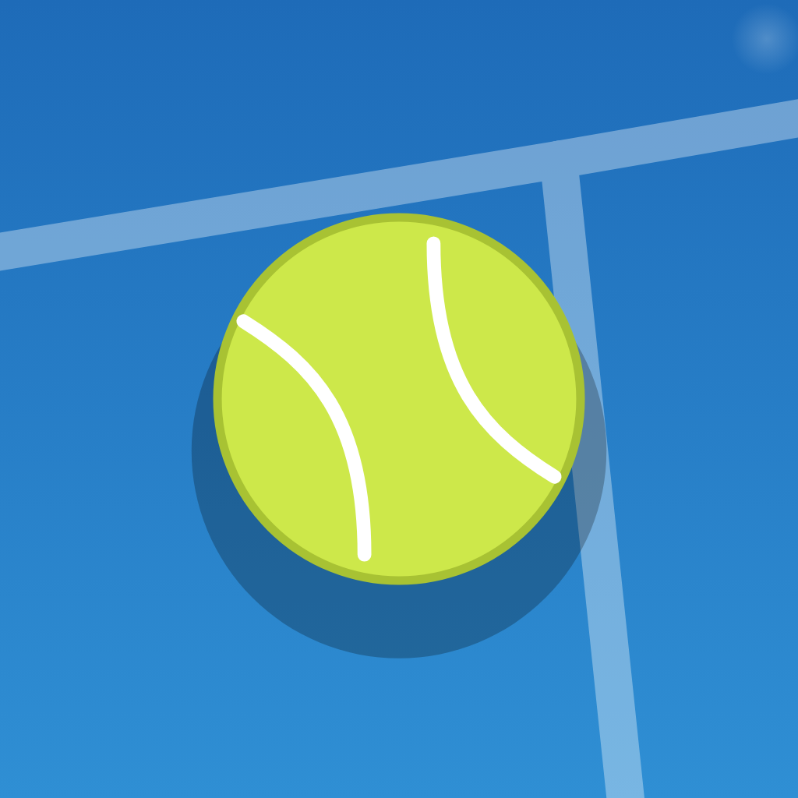

Fondasi design system baru dan seluruh layar Mabar dalam arah "papan skor pinggir lapangan". Semua layar digambar 1:1 di 390×844 pt, lengkap dengan sheet, dialog, menu, dan state penting. Catatan di bawah tiap layar menjelaskan perilaku yang harus ikut diimplementasikan.
Satu tema terang berkontras tinggi untuk dipakai di bawah matahari. Warnanya diambil dari lapangan: biru court, garis putih, tinta papan skor, bola, dan tanah liat.
#1E6BB8Identitas: lapangan tennis di Beranda, ikon app, tautan, fokus input.#164E8CRun-off di luar garis lapangan Beranda, tennis maupun padel.#BC5A33Permukaan lapangan padel di Beranda, dan hanya di situ. Bukan clay: tidak pernah untuk aksi atau status.#0F1E2CTeks utama, tombol utama, papan skor, menu terpilih.#3E4B57Teks kedua, ikon.#5F6D7AKeterangan kecil. Lulus 4.5:1 di paper dan card.#9AA6B1Placeholder, chevron, state mati. Bukan untuk teks yang harus dibaca.#CDE84AHanya untuk yang sedang berlangsung: round live, angka yang sedang diisi, penanda pemenang, peringkat 1. Tidak pernah sebagai teks di latar terang.#B9482AWO, akhiri, keluarkan, error validasi.#EEF2F5Latar layar.#FFFFFFGrup, baris match, sheet, dialog.#DCE3E9Pemisah baris, tepi input.#E3E9EETrack segmented, tombol stepper, tombol mati.Menggantikan palet Tailwind 600. Semua cukup gelap untuk nomor court putih tebal.
#2F8F5B #C4532D #1E6BB8 #C77422 #7A4FB5 #1B8A9A #C2457A #6B8A2A #4A5BC4 #5B6B7A
Sepuluh tema tetap. Default pindah dari hijau ke biru, mengikuti brand.
Satu file font menggantikan enam file Inter. Lebar (wdth) dipakai sebagai alat: condensed untuk angka, normal untuk teks, lebar untuk wordmark.
wordmark 28/800 w125mabarscore-xl 76/800 w7213score-l 54/800 w72Round 3num-m 22/800 w726 4 · 13 · 1–0title-l 30/800 w95Pemaintitle 22/800 w95Round 3sheet 21/800 w95Kelola pemainbody 16/400Andi Pratama · Budi Santosolabel 13/700Courtcaption 13/400Padel · Americano 21 · 8 pemainSemua angka memakai tabular-nums. Tidak ada label huruf kapital kecil di dalam app.
Satu set saja: Phosphor (MIT), bobot Bold, supaya garisnya setebal huruf dan terbaca di bawah matahari. Nama di bawah tiap ikon adalah nama aslinya di Phosphor, jadi bisa dicari dan dipakai langsung saat implementasi.
caret-leftKembalicaret-rightBaris yang bisa dibukadots-threeMenu JadwalrankingPeringkatusersPemain (Mixed)share-networkBagikanuserIlustrasi mode Fixed & Mixed (40 pt)equalsIlustrasi Fixed: pasangan tetapshuffleIlustrasi Mixed: pasangan bergantiplusBuat Rn, stepperminusSteppercheckSimpan skor, aturan fairness, warna terpilihlock-simpleBuat jadwal, round terkunciplayLanjutkan turnamen (sheet)clockTambah jam, Lanjutkan turnamenarrow-counter-clockwiseBatalkan Rn, Urungkanarrow-clockwiseAcak ulangflagAkhiri turnameninfoCara kerja Mixedclipboard-textTempel namauser-listIsi nama contohtrashHapus semua namabackspaceKeypad: hapusarrow-rightKeypad: kotak berikutnyahouseSelesai (ke Beranda)imageMenyiapkan gambartrophyJudul poster Bagikanclock-counter-clockwiseTurnamen terakhirdevice-mobilePasang Mabar di HPexportPanduan iPhone: Bagikanplus-squarePanduan iPhone: Tambah ke Layar UtamaMabarTennisBall, aset PNG). Emoji tidak dipakai di mana pun.phosphor_flutter (MIT) menggantikan semua Icons.* Material yang dipakai sekarang. Kalau API paketnya bermasalah di Dart 3, cadangannya: ekspor 31 SVG ini jadi font ikon sendiri.Tidak ada nomor round yang ditulis tetap. Semua label diturunkan dari state turnamen: n = roundCount (round yang sudah dibuat; Fixed: seluruh jadwal) · c = currentRound (round pertama yang masih ada match kosong) · k = round di tab yang dibuka · m = match.roundNumber · p = round yang punya minimal satu match selesai/WO · e = estimasi round tambahan.
| Tempat | Contoh di frame | Angka |
|---|---|---|
| Beranda · turnamen berjalan (01e, 01f, 01h) | Round 4 | c |
| Beranda · turnamen terakhir (01a, 01c) | Selesai di R6 | n |
| Jadwal · judul | Round 4 | k |
| Jadwal · tab | R1 … R4 | 1 … n |
| Jadwal Fixed · round terkunci (06b) | Terbuka setelah semua skor R2 terisi | k − 1 |
| Jadwal Mixed · tombol bawah (06f–06h) | Buat R5 · tunggu 2 match | n + 1 |
| Jadwal Mixed · istirahat, hanya di tab terakhir (06f–06m) | Istirahat · Prioritas main di R5 | n + 1 |
| Jadwal Mixed · batalkan, hanya di tab terakhir (06h, dialog 06j) | Batalkan R4 · tekan "Buat R4" lagi | n |
| Sheet Cara kerja Mixed (06k) | lalu tekan Buat R2 | n + 1 |
| Sheet Kelola pemain (08a, 08b) | berlaku mulai R4 | n + 1 |
| Sheet Lanjutkan turnamen (08c, 08d) | R1–R8 tetap · 4 round (R9–R12) | 1–n · n+1 … n+e |
| Input Skor & walkover (07a–07j) | Round 2 · Race to 6 | m |
| Peringkat · subjudul sementara (09a, 09b, 09d, 09e) | Sementara · R3 · 6 dari 6 match | c |
| Peringkat final, Bagikan (09c, 09f, 11a–11d) | 5 round · 10 match | p |
| Detail · riwayat match (10a, 10b) | R3 | m |
Untuk mengganti MabarColors sekaligus.
brand, success → ink untuk tombol, court untuk tautanbrandTint, brandBorder, successTint → dihapus (status tanpa kotak)warning* → dihapus; "sedang berlangsung" pakai balldanger* → claytext1/2/3/4/5 → ink / ink-2 / ink-3 / faint / linebackground, raised, muted → paper, fillcourtPalette → 10 warna court di atasSemua layar disusun dari komponen ini. Nama kelasnya dipakai sebagai nama widget saat implementasi.
.btn → MabarButtonball hanya untuk satu aksi "lanjutkan yang sedang berjalan" di Beranda. wait = mati karena menunggu sesuatu, alasannya di dalam tombol. off = mati karena isian belum valid.
.group · .seg · .stepperStepper di batasnya: tombol pudar dan tidak bisa ditekan. Angka di stepper bisa diketuk untuk diketik langsung. Lebar angka tetap 60 pt di semua stepper, jadi dalam satu grup tombol − dan + selalu sejajar satu kolom, termasuk baris court yang punya kolom nama.
.field · .chipChip selalu pilihan yang bisa diketuk: biasa · terpilih. Pilihan pendek mengalir (alasan WO); daftar nama memakai .chips.cols, dua kolom rata 44 pt (Pasangan manual), supaya 20 nama tetap rapi. Pilihan yang sudah dipakai pindah ke tempat hasilnya, tidak dipudarkan. Chip tidak dipakai untuk aksi atau untuk menampilkan daftar hasil.
.compose · .roster · .pairlist → NameListField · RosterPreview · PairListcompose: kotak teks dengan toolbar aksi di dalam kartunya (.txtbtn + ikon 20, paling banyak dua), garis pemisah di atas toolbar, fokus = tepi biru court di seluruh kartu. roster: hasil parser, dua kolom bernomor, urut ke bawah dulu, baris 40 pt. Hanya dipakai di layar Pemain. pairlist: daftar pasangan Fixed, satu nomor per baris dan dua kolom nama rata, baris 40 pt seperti roster (tidak bisa diketuk); pemain sisa ganjil bernomor "–". Label daftar dengan satu aksi teks di ujungnya memakai .ghead.
.txtbtn · .rowacttxtbtn → MabarTextButton: aksi teks di header (WO), dialog, dan di samping konten. Tinggi sentuh 44, teks di tengah. rowact → MabarRowAction: aksi di ujung baris daftar. Tombol 36 pt bertepi tipis, area sentuh tetap 44. Netral untuk aksi yang bisa dibatalkan, biru court untuk memulihkan, pudar saat mati.
.tabs → RoundTabsRound selesai cukup teks biasa. Round yang sedang berjalan diberi titik bola. Round Fixed yang belum terbuka berwarna pudar. Placeholder "R4 ?" di Mixed dihapus; tombol "Buat R4" sudah mewakili. Kalau tidak muat, hanya baris tab yang digeser dan tepi yang menyembunyikan tab dipudarkan (contoh ketiga; aturan lengkap di 06n).
.bug → MatchScoreRowBelum diisi · race to 6 dengan tie-break (7–6) · Americano · seri · WO (alasan ikut tampil) · tidak dimainkan setelah "Akhiri". Seluruh baris bisa diketuk untuk membuka Input Skor, kecuali yang tidak dimainkan dan round Fixed yang terkunci. Nama ditulis nama depan dengan pemisah titik tengah, sama di semua layar.
.board · .keypad → ScoreBoardSatu angka besar per tim untuk ketiga format. Kotak aktif berwarna bola dengan garis bawah; angka yang terisi otomatis (Best of, Americano) pudar. Keypad tidak membuka keyboard sistem. Tombol angka yang membuat isi kotak melebihi batas format mati (Race to N: N · Best of N: N · Americano: total); kombinasi dua kotak baru dicek setelah keduanya terisi, dan tombol tidak dimatikan berdasarkan isi kotak lawan. Pemenang: bola di kolom tetap kiri nama (ada di kedua tim supaya nama selalu rata); yang kalah pudar.
.rank → StandingTableStatistik identik → nomor sama (1, 1, 3). Peringkat 1 diberi bola. Kolom ketiga W–L–D di kedua metode (D hanya kalau format bisa seri), kolom terakhir nilai metode. Yang belum main dikelompokkan di bawah.
.dialog → showMabarConfirmMatch yang belum main tidak dihitung.
Pasangan tidak bisa diubah setelah jadwal dibuat.
Satu fungsi untuk semua konfirmasi: showMabarConfirm(context, title, message, confirmLabel, destructive) → Future<bool>. Dua varian: bahaya (aksi clay: 01h, 06e, 06j) dan lanjut (aksi biru court: 04d). Menggantikan tiga AlertDialog yang sekarang ditulis ulang di tiga file dan sudah berbeda latar, cara mewarnai aksi bahaya, dan huruf besarnya.
false)..sheet → showMabarSheetSkor & peringkat R1–R8 tetap
Catatan kecil: 13 ink-3, inset 4 seperti label.
LanjutkanshowMabarSheet<T>(context, title, subtitle, child, footer) → Future<T?>, membungkus showModalBottomSheet (isScrollControlled, latar card, radius atas 22, pegangan sendiri). Dipakai 01i, 03e, 06k, 07j, 08a–08d; menggantikan lima pemanggilan terpisah sekarang (pasang iPhone, warna court, walkover, kelola pemain, lanjutkan turnamen).
null). Naik bersama keyboard; isi yang melebihi 92% tinggi layar di-scroll di dalam, judul dan footer tetap.Menu ⋯: kartu putih berbayangan menempel di bawah tombol ⋯, item 48 pt dengan ikon 24, item berbahaya clay di bawah garis pemisah (06d, 06i). Toast: tinta dengan ikon bola, di atas action bar; hanya dipakai untuk "Hasil disalin" (11c).
Lapangan di atas, panel main di bawah (zona jempol), seperti layar mulai di aplikasi olahraga. Banner selalu menggambar lapangan olahraga yang sedang dipilih atau dimainkan, dengan proporsi asli pada skala 60 pt = 1 m. Garis dipertebal (baseline 7 pt, garis lain 4,5 pt) tapi dipudarkan ke 35% sebagai satu lapisan, jadi lapangan terbaca sebagai latar dan teks putih di atasnya tetap paling menonjol. Permukaan tennis biru court, padel terracotta; run-off di luarnya tetap biru tua di keduanya, jadi pergantian olahraga terbaca dari hangat-dinginnya warna tanpa mengganti bingkai. Lapangan mengisi sisa tinggi layar, jadi tinggi banner menyesuaikan isi panel di setiap kondisi.
archived: true). Pasang → dialog pasang bawaan browser (prompt) atau sheet 01i (manual, iPhone/iPad).none (native, sudah terpasang, browser tanpa dukungan) menyembunyikannya. Bisa muncul belakangan karena event browser datang terlambat, dan hilang setelah dialog pasang ditutup.#BC5A33: pasangan komplementer dengan run-off biru tua, beda kecerahannya cukup jauh sehingga tepinya tidak bergetar. Tennis tetap biru karena bola paling kontras di biru dan biru court adalah warna ikon app.Curves.easeInOutCubic, dijalankan saat tile berganti (arah dibalik untuk Padel → Tennis). Tidak dijalankan saat ada turnamen berjalan, karena banner mengikuti turnamen itu.reduce motion: crossfade 150 ms saja (garis, warna, dan nama).CustomPainter dengan parameter t 0–1, dipakai bersama generator ikon app. Pudar 35% lewat satu saveLayer beropasitas di atas warna court (bukan opasitas per garis, supaya persilangan tidak lebih terang); ikon app memakai painter yang sama dengan opasitas penuh karena kecil.Turnamen yang sedang berjalan (Padel · Mixed, Round 4) akan dihapus.
Lewat menu Bagikan di Safari
Buka di Safari dulu. Kalau link dibuka dari dalam app lain, menu Tambah ke Layar Utama tidak ada.
Mengerti
iOStool/generate_app_icon.dart me-render painter ini lalu flutter_launcher_icons seperti sekarang; favicon dan ikon PWA ikut.Satu kotak teks untuk ditempel dari grup WhatsApp, dengan aksinya menempel di bawah kotak. Penomoran dan bullet dibersihkan diam-diam; daftar bernomor di bawahnya menunjukkan hasil akhirnya.
.txtbtn (teks biru + ikon 20), bukan chip.1. 2) 03 - 4: - * •, spasi ganda, dan baris kosong..roster), urut ke bawah dulu. Nomornya memastikan penomoran dari WhatsApp sudah dibuang dan jumlahnya pas; kolom rata membuat 20 nama tetap rapi, tidak seperti chip yang membungkus tidak rata.Disusun seperti halaman pengaturan dan muat satu layar. Skor punya tiga format yang dipakai di mabar tennis maupun padel: Race to, Best of, dan Americano. Estimasi pindah ke tombol. Untuk Mixed, layar "Cara Kerja Mixed" dihapus: tombol langsung membuat Round 1, dan aturan fairness serta estimasi pindah ke sheet 06k.
user + equals / shuffle + user), ukuran orang identik, warna ikut teks. Deskripsi sama-sama satu baris. Isi rata tengah: dua kartu simetris dengan isi pendek, jadi tidak menyisakan ruang kosong di kanan.±round = booking terpendek ÷ durasi, match = round × court. Lanjut → Pasangan (04).booking terpendek ÷ durasi = 0. Baru: pesannya menyebut court penyebabnya (sekarang tertulis "Durasi belum diisi" yang menyesatkan).Hanya untuk mode Fixed. Satu daftar pasangan bernomor dengan dua kolom nama rata, bahasa visual yang sama dengan daftar di layar Pemain. Di Manual, pemain yang belum berpasangan ada di bawahnya sebagai chip dua kolom dan pindah ke daftar begitu dipasangkan. Pasangan diacak begitu layar dibuka; peringatan "tidak bisa diubah" ada di dialog saat menekan Buat jadwal.
.ghead), bukan tombol yang mengambang di tengah. Jumlah pasangan pindah dari subjudul ke label..chips.cols), bukan chip yang membungkus tidak rata. Slot kosong bergaris putus dihapus; progres ada di label "1 dari 4 pasangan".Pasangan tidak bisa diubah setelah jadwal dibuat.
showMabarConfirm varian lanjut.Round-robin penuh dibuat sekaligus. Contoh: Tennis, 10 pemain (5 pasangan), 2 court, jadi tiap round satu pasangan istirahat. Tombol akhiri yang dulu berupa lingkaran merah tanpa label pindah ke menu ⋯.
byePairIdByRound), nama depan dipisah titik tengah.Match yang belum main tidak dihitung.
Round dibuat satu per satu. Contoh: Padel, Americano 21, 10 pemain, 2 court, jadi tiap round dua orang istirahat. Kotak kuning "R… dibuat setelah skor R… lengkap" dihapus; alasannya ada di tombol.
roundCount: "Batalkan Rn", "Buat Rn+1", "Prioritas main di Rn+1". Daftar lengkapnya di tabel Label round (Fondasi).Jadwal R4 dihapus. Tambahkan pemain yang baru datang lewat Kelola pemain, lalu tekan "Buat R4" lagi.
Round dibuat satu per satu. Isi semua skor, lalu tekan Buat R2. Berhenti kapan saja.
canResume tanpa "Akhiri": semua court sudah tidak muat round berikutnya. "Buat R9" diganti "Tambah jam" → sheet 08c.restingPlayerIdsByRound), tidak berubah oleh tambah atau keluar pemain sesudahnya. Pemain yang kemudian keluar tetap tampil tanpa penanda, sama seperti di Peringkat.RoundTabs (baris tab yang digeser + ShaderMask di tepi); tidak pakai TabBarView.Dua sheet yang hanya ada di Mixed: mengubah daftar pemain di tengah turnamen, dan menambah jam booking untuk melanjutkan turnamen.
Berlaku mulai R4
.rowact. Keluarkan sengaja netral, bukan merah: bisa dibatalkan lewat Kembalikan, dan merah di setiap baris membuat daftar ramai.Berlaku mulai R3
Skor & peringkat R1–R8 tetap
max(booking, round × durasi) + tambahan.capacityAhead), n = round terakhir:Skor & peringkat R1–R8 tetap
Tambah jam minimal satu court
LanjutkanPapan skor gelap dengan satu angka besar per tim untuk ketiga format, dan keypad sendiri. Ketuk kotak untuk memilih, ketik angka (maksimal 2 digit), → pindah ke tim lawan. Format dan targetnya ditulis di subjudul sebagai pengingat host.
Eko & Fajar menang 6–4
Eko & Fajar menang 6–5
Hanya satu tim yang bisa mencapai 6
Andi & Dewant menang 3–2
N − x dan tampil pudar sebagai tanda otomatis. Mengetik di sisi lawan menimpa nilai otomatis dan mengisi ulang sisi pertama.Seri
Andi & Dewant menang +5
total − x. Kalimat "Isi salah satu, skor lawan terisi otomatis" dihapus.Citra & Fajar menang +17
Andi & Budi menang 6–4
Round 3 · Court 2
Hana & Gina menang WO dan dapat poin rata-rata mereka, minimal 11.
AlasanTabel rapat dengan angka rata kanan. Status ditulis di subjudul, bukan badge. Metode yang dipilih di sini juga dipakai Detail dan Bagikan.
1 match WO
1 match WO
1 match WO
1 match WO · 1 match tidak dimainkan
isFinished || (courtsAvailableForRound(n+1).isEmpty && isRoundComplete(n)).Satu baris angka menggantikan lima kotak statistik. Riwayat match memakai bentuk baris yang sama dengan Jadwal.
Belum ada match. Muncul setelah skor pertama diisi.
Kartu pratinjau, pilihan tema dan format, lalu dua gambar (Feed 1:1 dan Story 9:16) dibagikan lewat share sheet sistem dengan teks hasil sebagai caption.
Colors.white langsung).SharePoster (SharePosterTarget pratinjau / Feed / Story).mabar-feed-1080x1080.png, mabar-story-1080x1920.png, dibagikan bersamaan lewat Share.shareXFiles.loadHifiFonts()), jangan percaya font Ahem.#E3B341 dengan tulisan tinta, dan namanya lebih tebal. Kalau ada dua #1 (statistik identik), keduanya dapat lencana.Pemetaan setiap layar dan fitur di app sekarang ke frame baru, supaya tidak ada yang terlewat saat implementasi. Diambil dari pembacaan seluruh kode lib/features.
| Layar sekarang | Isi dan state yang dicakup | Frame baru |
|---|---|---|
| 01 Beranda | Hero, kartu Lanjutkan turnamen, kartu Turnamen terakhir · tambah jam (Mixed), kartu Pasang Mabar di HP (prompt / manual / none), pilihan Tennis/Padel, dialog mulai baru, sheet pasang di iPhone | 01a–01j, 08c |
| 02 Peserta | Textarea + parser, Tempel, Contoh, Hapus semua, pratinjau, duplikat, minimal 4 / maksimal 20 | 02a–02d |
| 03 Konfigurasi | Fixed/Mixed, Skor Tennis/Americano, poin 2–99, durasi, jumlah court 1–10, warna/nama/booking per court, estimasi, durasi tidak muat, sheet warna | 03a–03e |
| 04 Pasangan | Acak, Acak ulang, Manual (pilih, lepas pilihan, Urungkan), pemain ganjil, kunci pasangan, 20 pemain | 04a–04e |
| 05 Cara Kerja Mixed | Penjelasan round, Aturan Fairness, Estimasi 4 angka, Mulai Round 1 | 03b (tombol), 06k (sheet) |
| 06a Jadwal Fixed | Subjudul waktu, tab (selesai / berjalan / belum terbuka), round terkunci, match kosong / selesai / seri / WO / tidak dimainkan, istirahat (pasangan ganjil), Peringkat, Akhiri, kondisi selesai | 06a–06e |
| 06b Jadwal Mixed | Tab, Buat Rn (tunggu / aktif / court berkurang), Batalkan Rn + dialog, istirahat + prioritas, Peserta (n), Akhiri, waktu habis, diakhiri, Lanjutkan turnamen, banyak round (tab digeser), banyak yang istirahat | 06f–06o |
| Sheet Kelola Peserta | Tambah, Keluarkan, Kembalikan, pemain keluar, empat pesan error, minimal 4 | 08a–08b |
| Sheet Lanjutkan Turnamen | Jam per court 0–6, sisa waktu, estimasi match, court berkurang, match tidak dimainkan, tombol mati | 08c–08d |
| 07 Input Skor | Skor tennis per set, Americano + isi otomatis, seri, semua pesan validasi, batas angka di keypad, ubah skor (Perbarui), WO dari match yang sudah diisi | 07a–07i, 07k |
| 07b Walkover | Pilih pasangan, pemenang WO, alasan, Batal/Simpan, WO yang sudah ada | 07j |
| 08 Peringkat | Sementara/Final, Total Point / Win %, baris Mixed & pasangan Fixed, seri, selisih negatif, jumlah WO, Bagikan, ketuk ke Detail | 09a–09f |
| 09 Detail Pemain | Statistik, beda partner/lawan, kalah WO, riwayat menang/kalah/seri/WO, belum ada match | 10a–10c |
| 10 Bagikan | Kartu pratinjau, 10 tema, Ringkas/Lengkap (sampai 20 pemain), menyiapkan gambar, poster Feed & Story, caption, toast Hasil disalin, Selesai | 11a–11j |
appVersion, semver); data tanpa versi atau dari skema lama diabaikan, bukan dipaksa dibaca (2026-10-22).ranking_calculator).showMabarConfirm untuk semua dialog konfirmasi, showMabarSheet dengan lima jenis footer.Tanpa frame, cukup teks di tengah layar: "Halaman tidak ditemukan", "Belum ada turnamen berjalan" (Peringkat, Detail, Bagikan), "Match tidak ditemukan", "Pemain tidak ditemukan", dan spinner saat Jadwal membuat round pertama.